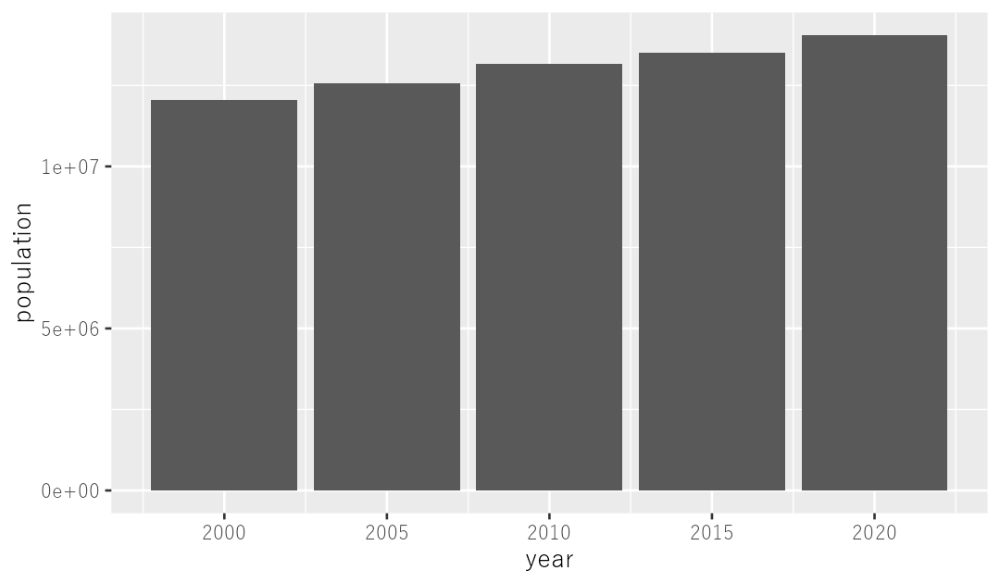
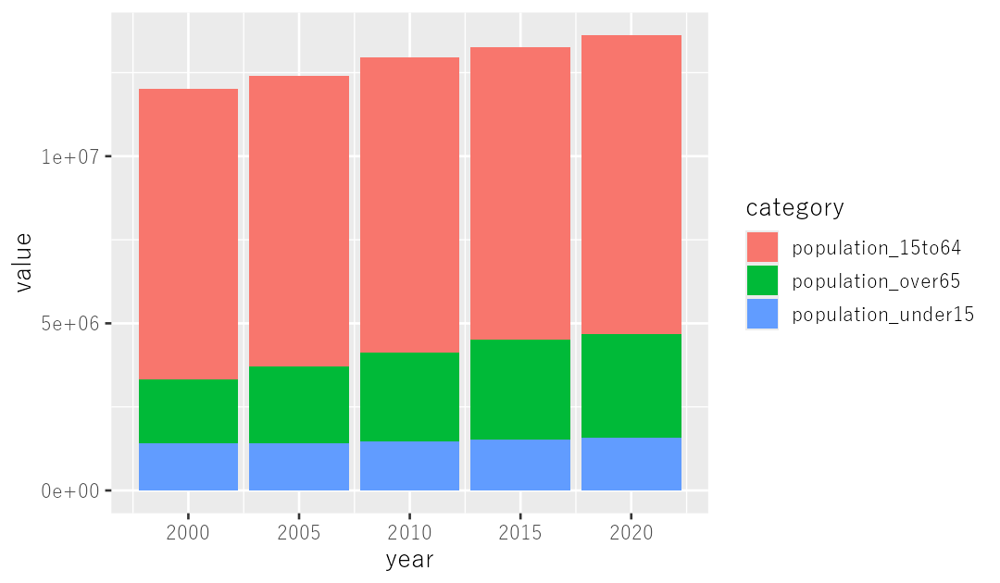
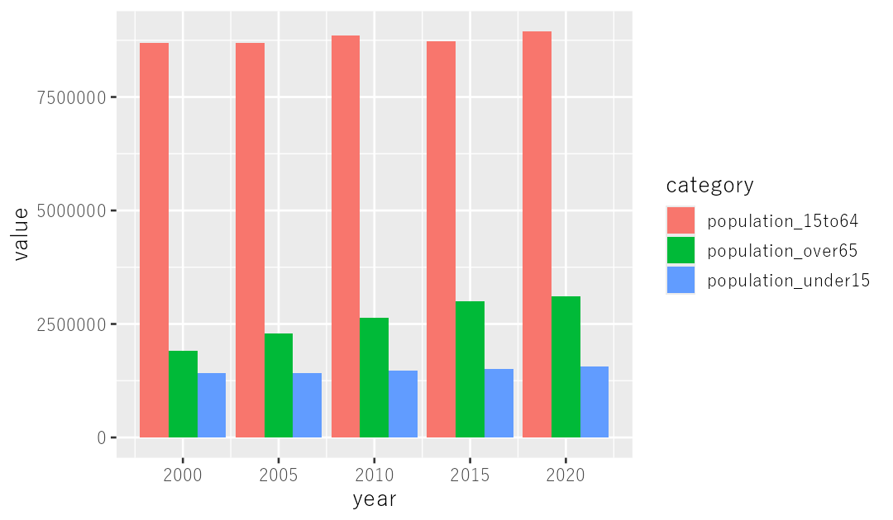
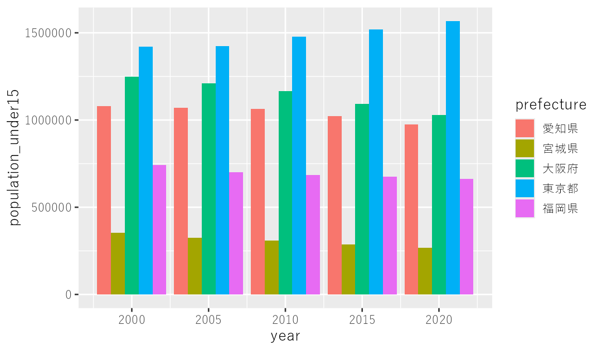

第2部 データを見る
棒グラフ
棒グラフを描くには、折れ線のときにgeom_lineと書いていたところをgeom_colに変えるだけ。ただし色分けはcolorではなくfillで、そのために縦長への変形が必要になります。
ではつぎに、棒グラフを作っていきます。折れ線グラフと同じように、東京都の人口データを可視化してみましょう。コードは折れ線グラフのときと、ほとんど変わりません。
tokyo %>%
ggplot() +
geom_col(aes(x = year, y = population))
コードは、折れ線グラフで geom_line としていたところを geom_col としただけです。colはたぶん、「柱」を意味するcolumnの略。これで東京都の人口が増え続けていることを示す棒グラフができたはずです。
積み上げ棒グラフ
ただ、これも1色しかないので少し寂しい気もします。年代別に色分けして、各年代でどんな増減があったかを可視化してみましょう。
tokyo %>%
select(-population) %>%
pivot_longer(cols = -c(year, prefecture),
names_to = "category",
values_to = "value") %>%
ggplot() +
geom_col(aes(x = year, y = value, fill = category))
はじめに select 関数で population の列を除外しているのは、年代別の人口を積みあげた棒グラフにしたいのに、全体の人口を示すこのデータが残っていると二重計上になってしまうからです。
そのうえで pivot_longer 関数をかけて、人口の数値はすべて value 列に入るように加工しています。なぜなら、ggplotで「縦軸にこれを使いなさい」と指定できるのは一つの列だけだからです。横長の状態だと、人口は population_under15 と population_15to64、population_over65 という三つの列に分かれてしまっていますが、ggplotで縦軸上に（あるいは横軸上に）表現したいデータは、すべて一つの列に格納されている必要があるのです。
そのうえで、fill = category というところで「categoryごとに色分けしなさいね」と指示しています。
colorとfillの違い
折れ線グラフのときは、色分けは color = ●● とやっていたのに、今回は fill = ●● です。ややこしいですが、折れ線のときは色つきの線を描いていたのに対し、今回は四角い形で表現された棒の中身を色で「埋めて」いますよね。だからfillになるんだ、と私は解釈しています（この解釈が正しいか、裏は取っていませんが）。
ともあれ、縦軸と横軸にそれぞれ、可視化したい列の名前を指定するというggplotの基本は、折れ線のときと変わりません。
横に並べる棒グラフ
今回は「積み上げ型」の棒グラフになりましたが、つぎに各年代の人口を示す棒が横に並んだグラフにしてみましょう。こんなコードです。
tokyo %>%
select(-population) %>%
pivot_longer(cols = -c(year, prefecture),
names_to = "category",
values_to = "value") %>%
ggplot() +
geom_col(aes(x = year,
y = value,
fill = category), # ここまでは同じ
position = "dodge")
といっても、先ほどのコードとほぼ同じ。geom_col() の丸括弧の中で position = "dodge" と指定したのが唯一のちがいです。dodgeというのはドッジボールのドッジで、「かわす」という意味があります。できあがったグラフをみると、増えているのはほぼ65歳以上の人口だけなのだな、ということがわかりますね。
ここで気をつけたほうがいいのは、position = "dodge" という記述が aes() の丸括弧の外側にあるということです。コンマでつなぐことによって、階層構造的にみて aes() と同じレベルのところにあるのです。丸括弧の中に入れてしまうと、エラーが出ます。
これまで見てきた color とか fill は、横軸と縦軸を示すxとyの二つと同じレベルにありましたが、position はその一つ上のレベルにあるのです。position は都道府県ごとに変わるものではなく、グラフ全体の並べ方の指定だから、外側に書くわけです。
5都府県の子どもの数
ではつぎに主な5都府県の子どもの数を、積み上げ式ではなくて横にずれた棒グラフで表現してみましょう。コードはこうなります。
five_pref %>%
ggplot() +
geom_col(aes(x = year, y = population_under15, fill = prefecture),
position = "dodge")
東京都でのみ、子どもの数がわずかながら増え続けていることがわかりますね。
次の章では散布図を描きます。全国1700余りの市町村をいちどに眺めて、「東京だけ子どもが増えている」という話をもう少し追いかけます。